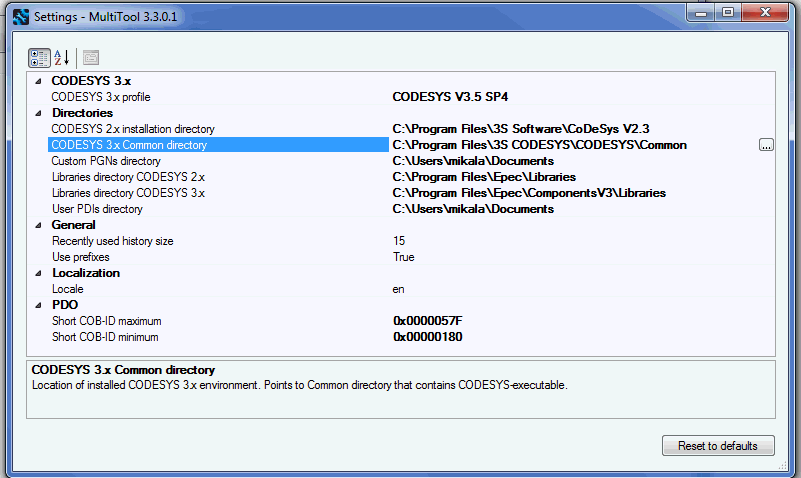

MultiTool must know installation directory of the CODESYS 3.5 to be able to open created CODESYS project. This place is defined trough settings dialog with parameter CODESYS 3.x Common Directory.

Epec Oy reserves all rights for improvements without prior notice.
Source file topic200040.htm
Last updated 25-Jun-2025